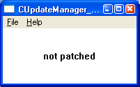
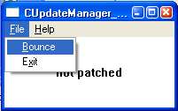
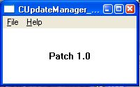

CUpdateManager::Bounce Rerun Program Sample
AUM: Application Update Manager (2!)
About the CUpdateManager::Bounce Rerun Progam Sample
This sample show how to automatically restart your application. This is an important of application updating: many game patches involve changing your game program; the game must therefore not be running when the patch runs. To make this happen a small utility program (WTRerunProgramUtility) is provided along with a standard library routine "Bounce".
- The WTRerunProgramUtility.exe program is generated when the WTPlatform is built and is part of the normal release.
- The Patch.exe in this case is a trivial program that creates a file "message.txt" that the main program reads (and deletes) on startup; the message inside is displayed by the program.
| Before |
During |
After |
 |
 |
 |
Sample showing the three stages of patching: before, the word "not patched" is visible.
The 'Bounce' menu item triggers the bounce; afterwards the application is patched to
display the words "Patch 1.0". The application has been restarted at this point.
Compiling and Linking
The sample was created in October, 2005 and uses those standards:
- Visual Studio .NET 2003
- C++ / Advanced / Calling Convention / __fastcall instead of the Microsoft default of __cdecl.
- C++ / Code Generation / Runtime library / Multithreaded (either debug or release) instead of the Microsoft default of "single threaded"
- The compiler must look in C:\Projects\WTPlatform\Source for include files
- The linker must include WTPlatform1.lib or WTPlatform1D.lib
- The linker must look in directory C:\Projects\WTPlatform\Build\Release (or Debug) for the library
Internal Details
The sample itself is simply a normal Windows application created by Visual Studio .NET 2003. The "Bounce" menu item was added to the menu and the corresponding code added to the WndProc / WM_COMMAND handler:
case IDI_BOUNCE:
//
// Call 'Bounce' with the standard programs. The game will be automatically
// rerun. WTRerunProgramUtility.exe is the program that knows how to bounce;
// Patch is the program that will install the updates.
//
WT::System::Net::CUpdateManager::Bounce ("WTRerunProgramUtility.exe", "Patch");
//
// If you get here, something bad happened -- normally the
// Bounce method will not return (it exits right away)
//
MessageBox (hWnd,
"The 'Bounce' didn't work -- perhaps you don't have the \n"
"WTRerunProgramUtility in the program directory?\n"
"\n"
"You need the 'Patch' program (also generated by this\n"
"solution) in the working directory, too\n",
"Error - no set up correctly", MB_OK);
break;
When the 'Bounce' menu item is selected, the above code will call the Bounce method, passing
in two parameters: the name of the program that will 'bounce' (rerun) the game, and the
name of the program that will update the game. These will essentially always be the same.
The WTRerunProgramUtility is part of the WTPlatform build (as of 19-OCT-2005 the exact spot
is not known); the Patch.exe will be generated by the AUM Make-a-Patch program (again,
as of 19-OCT-2005 the exact details are not known).
Note that the Bounce method does not normally return! Instead Bounce simply exits.
If you intended to save a file before exiting -- whoops! you should have done that already!
It's very important the the exit happen quickly so that the patch will have time to run.
(The Bounce method, by default, will wait for one second for the original program to stop running).
In addition, the program reads in and deletes a file called "message.txt" on startup.
If the file doesn't exit, a default message is used. The WM_PAINT handler displays the
message on the main window. Some other minor tweaks were made, such as sizing the window
to be fairly small on startup.
It's possible to further customize the 'Bounce' experience with a custom build of the
WTPlatform -- in particular, it's possible to customize the number of programs to run,
set flags, etc. Please talk to either Ronen Borshack or Peter Smith for details.
Related Samples:
The WTRerunProgramUtility program, which is built in the
Projects\WTPlatform\ToolsUtilities\WTRerunProgramUtility directory, contains a sample
directory that demonstrates more of the full power of the WTRerunProgramUtility program.
The Bounce method simply uses some of that program's power. The Sample directory
most importantly contains a sample.bat file that lists all of the commands that
the utility supports and demonstrates them.
Contents of this Sample directory
This Sample directory contains:
- About.html -- this help file
- Banner.bmp -- a banner file to make this help file look nicer
- CUpdateManager_Bounce.cpp -- the main .cpp demo file
- same.h -- .h file, ditto -- not interesting
- same.ico -- icon file for the sample -- not interesting
- same.rc -- resource file for the sample -- not interesting
- same.sln -- Visual Studio .NET 2003 solution file -- not interesting
- same.vcproj -- Visual Studio .NET 2003 project file -- demonstrates the switches needed to make a WTPlatform program work
- patch.exe -- a simple program that writes the word "Patch 1.0" into file message.txt
- resource.h -- not interesting
- small.ico -- not interesting
- stdafx.cpp -- not interesting
- stdafx.h -- not interesting
- WTRerunProgramUtility.exe -- 19-OCT-2005 version of the rerun program. Demonstrates that each program that uses the Bounce method must include this program (or a workalike) in their normal installation package.